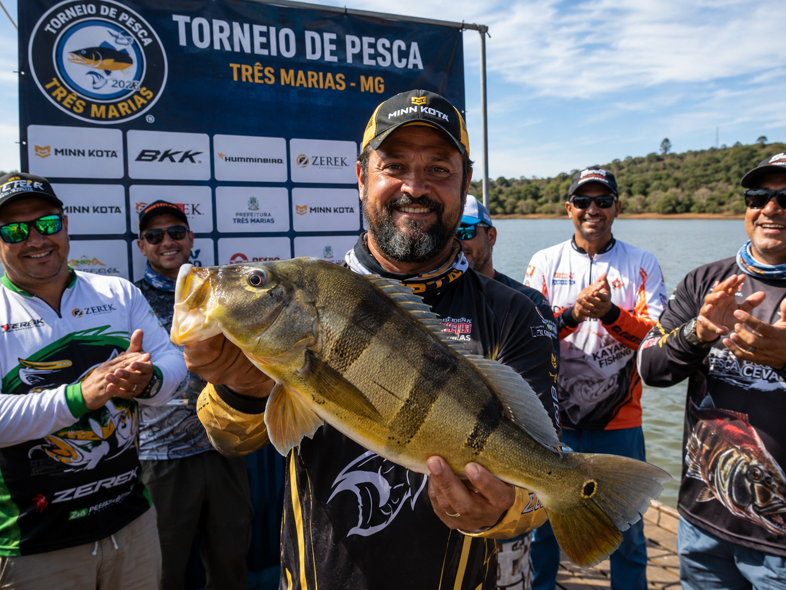
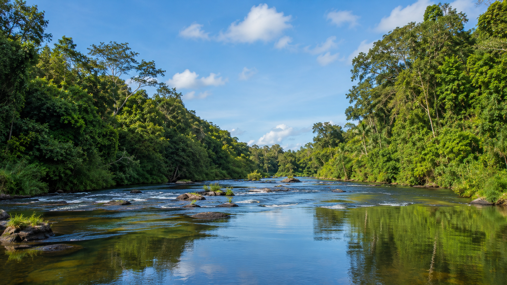
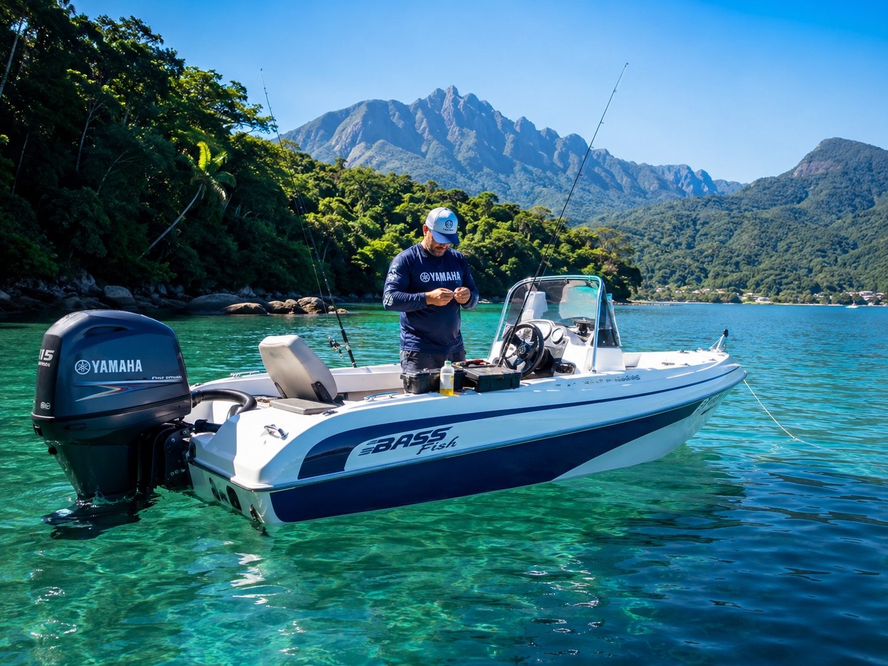
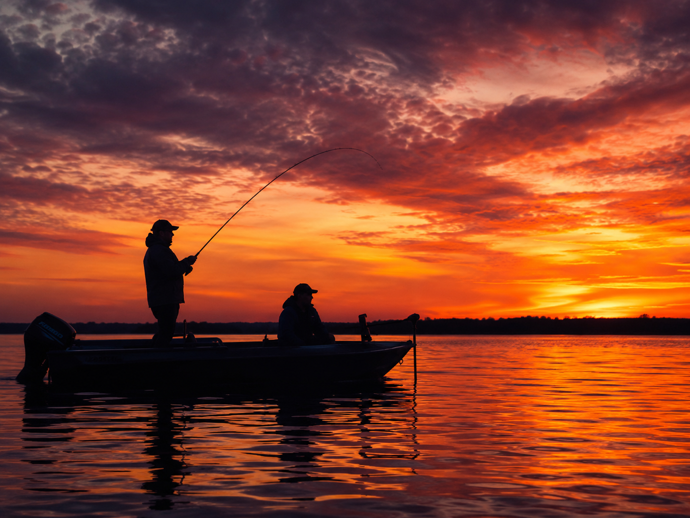

Técnica de Arremesso
Aprenda a técnica de arremesso com este vídeo tutorial.
Fotos e vídeos de pescarias inesquecíveis e paisagens deslumbrantes.
Foto de pescador com troféu

Confira alguns dos registros mais impressionantes.



Aprenda a técnica de arremesso com este vídeo tutorial.
| Destino | Estado | Melhor Época |
|---|---|---|
| Praia do Cassino | Rio Grande do Sul | Novembro a Março |
| Rio Negro | Amazonas | Setembro a Fevereiro |
| Pantanal | Mato Grosso | Abril a Outubro |
| Represa de Itaipu | Paraná | Ano todo |
| Litoral de Florianópolis | Santa Catarina | Dezembro a Março |
Mapa interativo dos melhores pontos de pesca